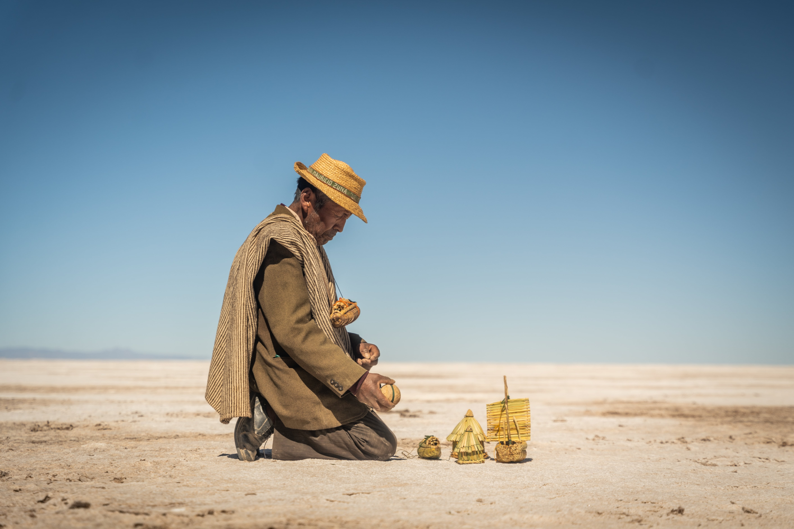
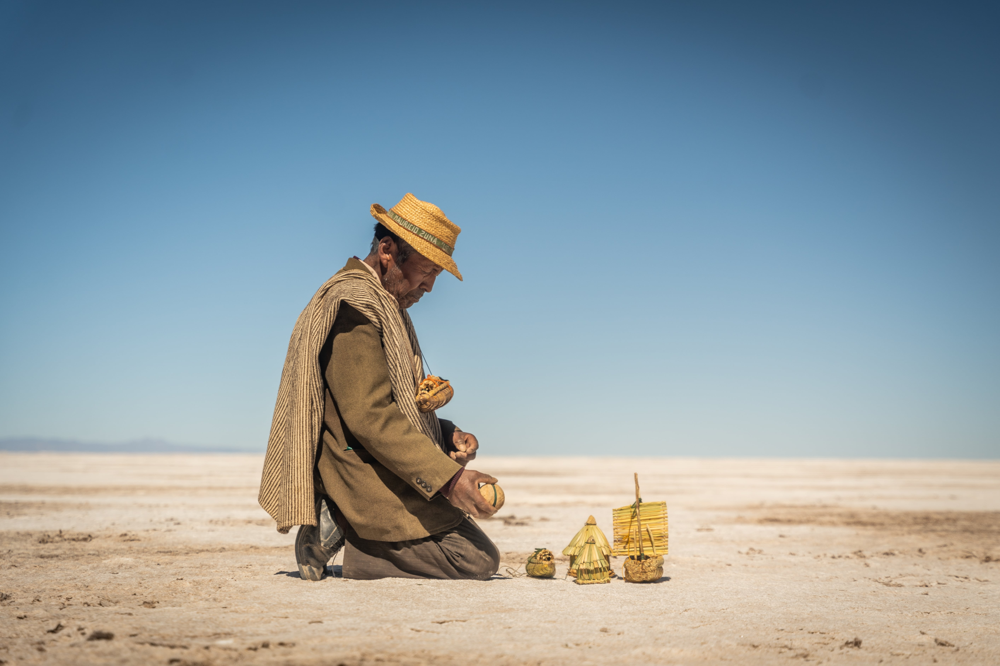

Últimos proyectos
Una selección de obras que documentan territorios, tensiones sociales y transformaciones silenciosas.
Qotzuñi – Hombres del Lago
Cortometraje documental sobre la comunidad Uru y su relación espiritual con el agua. Selección oficial DOC NYC y otros festivales internacionales.
Last Train to Patagonia
Artículo publicado en National Geographic sobre el último tren de pasajeros a la Patagonia. Un viaje entre Viedma y Bariloche, donde la imagen recorre la nostalgia de los rieles, la geografía y la memoria ferroviaria del sur argentino.
Carbon Credit in Practice
Documental que analiza el funcionamiento global del mercado de créditos de carbono. Una investigación audiovisual sobre sostenibilidad, justicia climática y economía.
Galería
Una colección de imágenes tomadas en territorios donde lo humano, lo político y lo poético se cruzan.

 

SOBRE MÍ
Soy fotógrafo, realizador audiovisual y diseñador visual nacido en Buenos Aires. Me enfoco en contar historias sociales, ambientales y territoriales a través del documental, la instalación y la experimentación visual.
Trabajé con organizaciones como National Geographic y la ONG Cadena, y mi cortometraje Qotzuñi: People of the Lake fue premiado internacionalmente y quedó elegible para los Premios Oscar 2026.
Expuse mis fotos en los Sony World Photography Awards en Londres y en PhotoVogue en Milán. Hoy desarrollo proyectos que cruzan tecnología, memoria e identidad con una mirada sensible y comprometida.
CONTACTO
¿Querés contar una historia conmigo, hacer una colaboración o simplemente charlar?
gastonzil@gmail.com
Instagram |
LinkedIn |
Portfolio